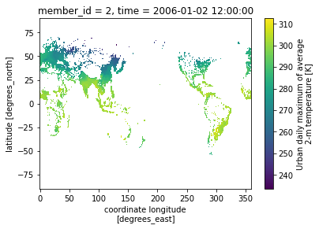
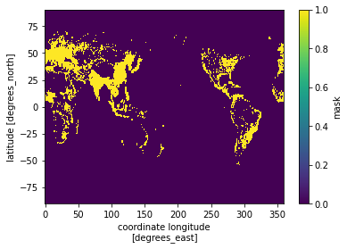
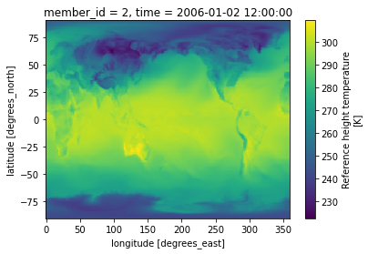
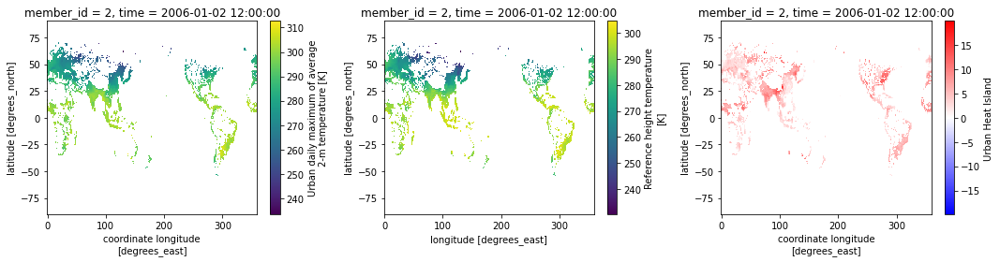

How to create a mask for CESM1’s “urban areas”?
This script is used for creating a urban mask at the global scale for CESM1 data.
Reference:
- GitHub: https://github.com/ncar/cesm-lens-aws/
- (outdated) Reproduce CESM-LENS: http://gallery.pangeo.io/repos/NCAR/cesm-lens-aws/notebooks/kay-et-al-2015.v3.html
Step 0: load necessary packages and define parameters
[1]:
%matplotlib inline
import warnings
warnings.filterwarnings("ignore")
import intake
import numpy as np
import pandas as pd
import xarray as xr
import matplotlib.pyplot as plt
# define parameters for data retrieval
catalog_url = 'https://raw.githubusercontent.com/NCAR/cesm-lens-aws/main/intake-catalogs/aws-cesm1-le.json'
experiment = "RCP85"
frequency = "daily"
urban_variable = "TREFMXAV_U"
cam_variable = "TREFHT"
Step 1: load datasets
[2]:
col = intake.open_esm_datastore(catalog_url)
col_subset = col.search(experiment=experiment, frequency=frequency, variable=urban_variable)
dsets = col_subset.to_dataset_dict(zarr_kwargs={"consolidated": True},
storage_options={"anon": True})["lnd.RCP85.daily"]
--> The keys in the returned dictionary of datasets are constructed as follows:
'component.experiment.frequency'
100.00% [1/1 00:00<00:00]
Step 2: find the urban gridcell
Given that urban gridcell is time-invariant, let’s use
member_id = 2 and time="2006-01-02"[3]:
da = dsets.sel(member_id=2, time="2006-01-02")[urban_variable].load()
da.plot()
[3]:
<matplotlib.collections.QuadMesh at 0x2abf60495790>

Step 3: save the urban mask
The file is save at current working directory, with a file name “urban_mask.nc”
[4]:
da.notnull().squeeze().drop(["time","member_id"]).rename("mask").to_netcdf("./CESM1_urban_mask.nc")
Step 4: load the urban mask
[5]:
mask = xr.open_dataset("./CESM1_urban_mask.nc")["mask"]
mask.plot()
[5]:
<matplotlib.collections.QuadMesh at 0x2abf60a2df10>

Step 5: apply the urban mask to CAM
load CAM data
[6]:
col_subset = col.search(experiment=experiment, frequency=frequency, variable=cam_variable)
dsets = col_subset.to_dataset_dict(zarr_kwargs={"consolidated": True},
storage_options={"anon": True})['atm.RCP85.daily']
da_cam = dsets.sel(member_id=2, time="2006-01-02")[cam_variable].load()
da_cam.plot()
--> The keys in the returned dictionary of datasets are constructed as follows:
'component.experiment.frequency'
100.00% [1/1 00:00<00:00]
[6]:
<matplotlib.collections.QuadMesh at 0x2abf6164fd60>

apply the mask to CAM data and calculate the difference
[7]:
da_cam_urban = da_cam.where(mask)
fig, (ax1, ax2, ax3) = plt.subplots(1, 3, figsize=(15,4))
da.plot(ax=ax1)
da_cam_urban.plot(ax=ax2)
(da-da_cam_urban).rename("Urban Heat Island").plot(ax=ax3, cmap="bwr")
plt.tight_layout()

check the dimension
[8]:
print("city number:", da.to_dataframe().dropna().shape[0])
assert (da-da_cam_urban).rename("Urban Heat Island").to_dataframe().dropna().shape[0] == 4439
city number: 4439